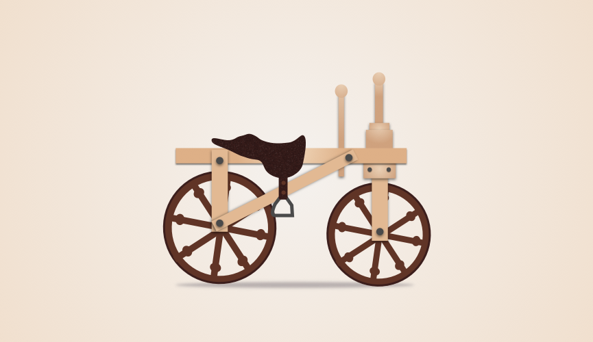
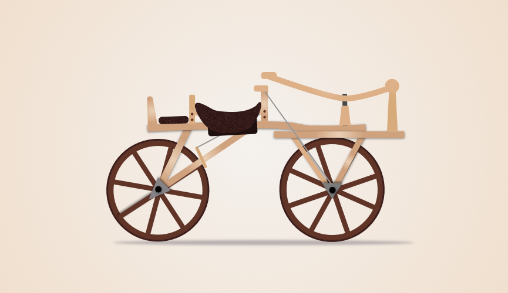
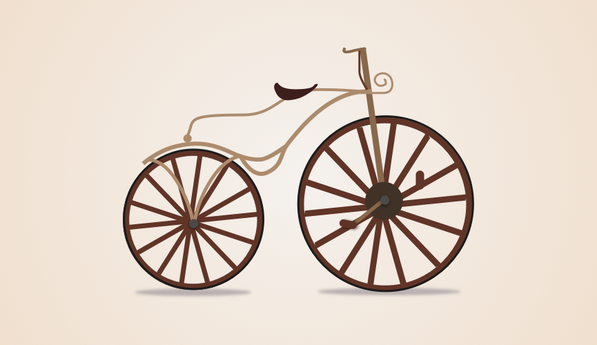
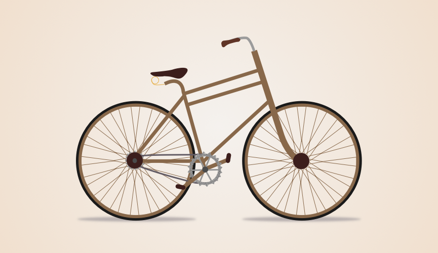

1810. Originally called a hobby horse, moved by scooting your feet on the ground.1815. Steering is introduced. Metal rings protect the wooden wheels.1818. Brakes, adjustable seat height, and a back seat.1839. Pedals get people's feet off the ground. Alternate pushing them forward to make the back wheels rotate. Wooden frame and wheels replaced with steel.1869. Rotating pedals attached to the front wheel. Rubber tires (not inflatable tubes yet) cover wheels. Decorative elements and some suspension.1872. Larger front wheel to get more distance per rotation. Low handle bars to get out of the way of knees. Wire spokes make lighter wheels. Inflatable tires1885. Pedals attached to back wheel again. Push pedals, instead of rotating ones, allow for a bigger wheel. Front wheel is dedicated to steering, the first time acceleration and steering are on different wheels.1889. Gears bring size of the wheels down and move the pedals and seat to the center.1899. Wheels are the same size. Lighter frame makes for an easier ride.1920. Road bikes lowered the handles and simplified the frame.